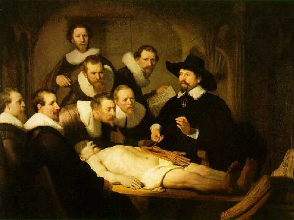
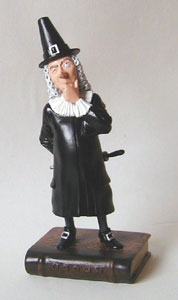
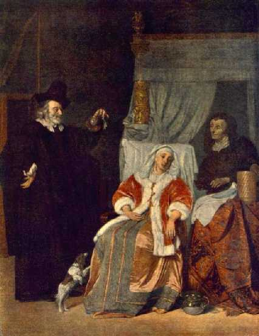

|
In the 17th and 18th centuries, illness was closely tied to religion. People believed it was a punishment or a warning sent to those who disobeyed God's commandments. Seen this way, prayer was essential to healing, and the curé (parish priest) played as important a role as the physician or the surgeon. During epidemics, for example, great processions were organized, in the firm belief that they would overcome the disease and save the population from certain death. In New France, suffering was part of everyone's lot, and people sought help only when things became serious. The physician was the most qualified in the field, since he had to study for six years before practising. During the French Regime, some 150 years, five doctors of medicine settled in Canada, and only two had a real career there. They practised in the towns and served the well-to-do, the only group able to afford them. There was no medical school in the country.  Since physicians were scarce in the colony, the job of caring for the sick fell mostly to surgeons. They were relatively numerous, most of them military men who came with the troops. They were often very young and had minimal training. Unlike physicians, surgeons practised not a profession but a trade, which they learned as apprentices to a master. Most of them were barber-surgeons and could just as well bleed a patient as trim a beard. Like physicians, surgeons mostly lived in town, and it was very hard for country people to get their help. Very often, to be treated, they went to an old woman in the parish who knew a little about natural remedies and knew how to set fractures. Only in extremely serious cases did they send for a surgeon.  The physician, and above all the surgeon, stepped in to drain off excess humours or to change their nature. To do this, they used bleeding, enemas, purgatives, emetics, etc. They rarely operated inside the body, the most complex operations being the removal of a breast or a caesarean section. Bleeding was one of the most common medical procedures; it consisted of opening a vein with a lancet to draw off blood. Often, people of modest means preferred to treat themselves with folk remedies rather than trust conventional medicine. They relied on a few old recipes. To heal sores and wounds, for example, they used l'onguent des Paters (the Our Father ointment), which was made of seven spoonfuls of lard put into a pot while reciting an Our Father each time. This ointment was said to work real miracles. People also believed that drinking the urine of a black cow was enough to cure tuberculosis, or that eating a slice of bread and butter topped with crushed lice would cure jaundice. 
|